Product · Design · Technology
I design and build digital products — most recently as a developer at Accountflow, where my work also extends into customer support, onboarding and product communication. Below is a selection of work, including projects built with AI-assisted workflows.
Selected Work
Product design, interaction design and hands-on implementation — spanning a customer-facing validation tool, a personal AI-assisted language-learning product, and a digital drawing application built from scratch.
Product design and development · Accountflow
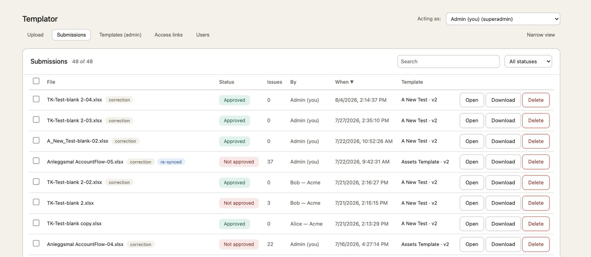
Built to address a common customer problem: Excel and CSV files being rejected because of invalid data. The tool identifies the errors and helps users correct them before resubmission.
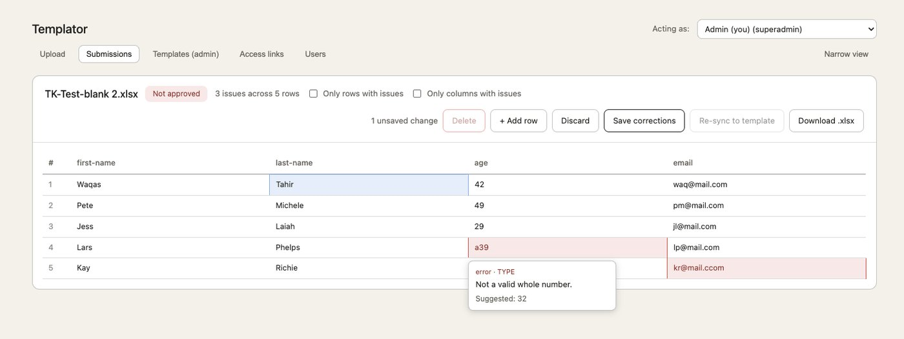
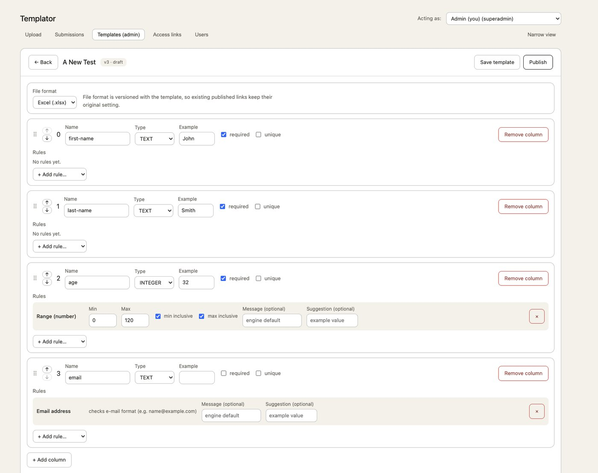
Each invalid cell explains the problem and suggests a correction. Users fix issues directly in the table before downloading the corrected file or resubmitting it. Behind the validator: configurable rules for each column.
Personal project · Product design and development
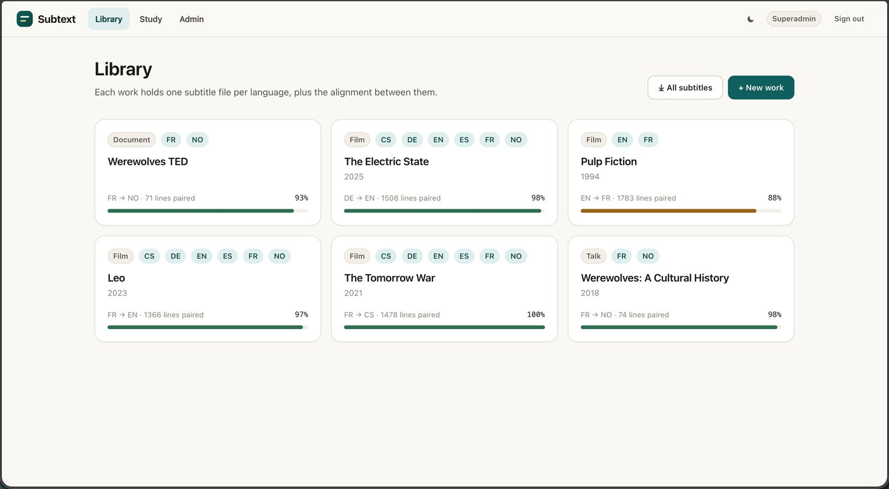
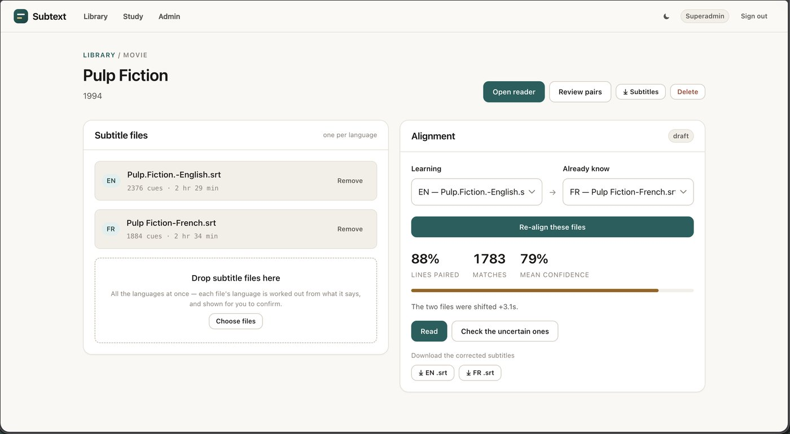
A library view showing alignment status across titles and language pairs. From subtitle files to usable learning material: align languages, review uncertain matches and read dialogue in context.
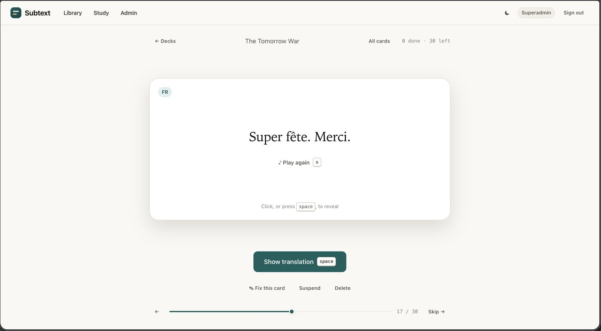
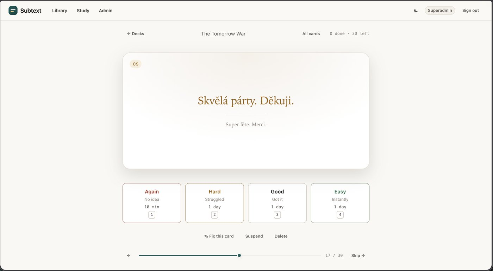
A single study flow from prompt to rating: listen, reveal the translation, then rate the card for spaced repetition. I own the product flow, interaction design and implementation, and use AI to explore alternatives, prototype and debug.
Personal project · Product design and development
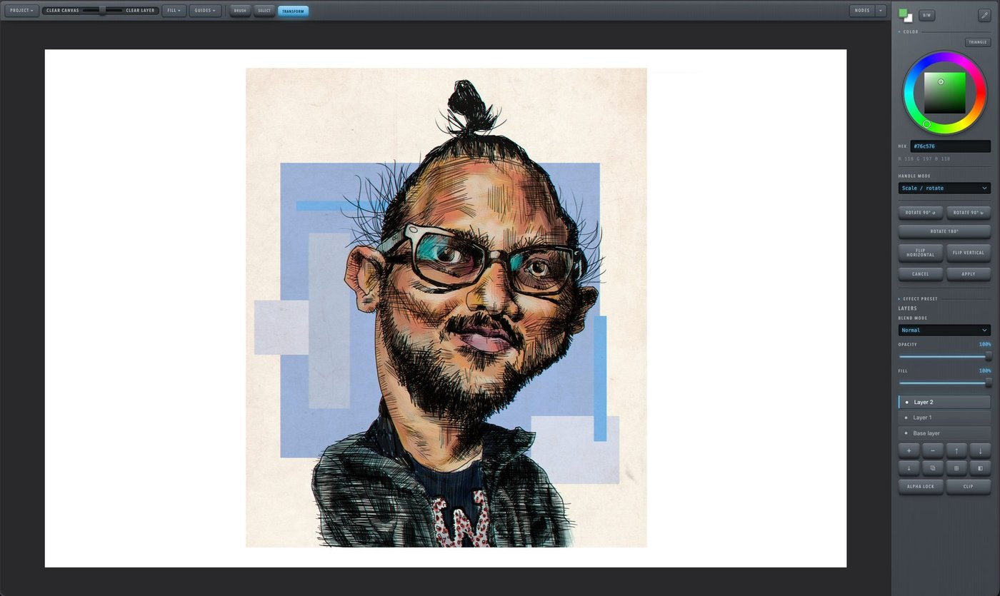
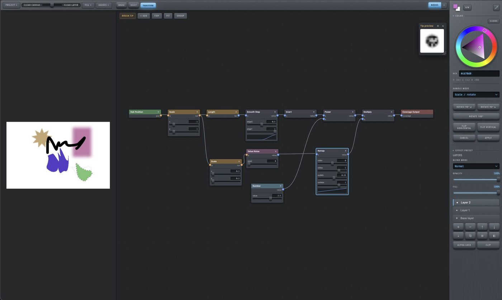
Self-portrait created in the application — product design, interaction design, engineering and illustration. A node-based system underneath lets me compose and control brushes and effects.
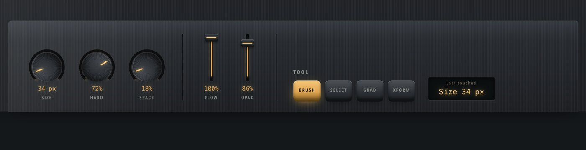
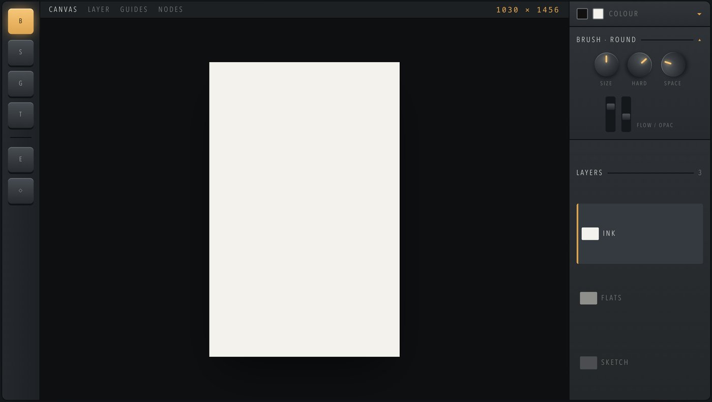
Exploring different approaches to tool placement, visual hierarchy and quick access to frequently used controls.
About
Creative and technical problem solver with a background in art and design, software development, and five years at Accountflow building a reconciliation software used by accounting firms across Norway.
I enjoy understanding complex workflows, identifying user problems and turning them into clear, usable solutions. I am particularly drawn to roles that combine product design with hands-on technical work.
Developer · August 2021 – Present
Developer in a small B2B SaaS team, with responsibilities extending beyond coding.